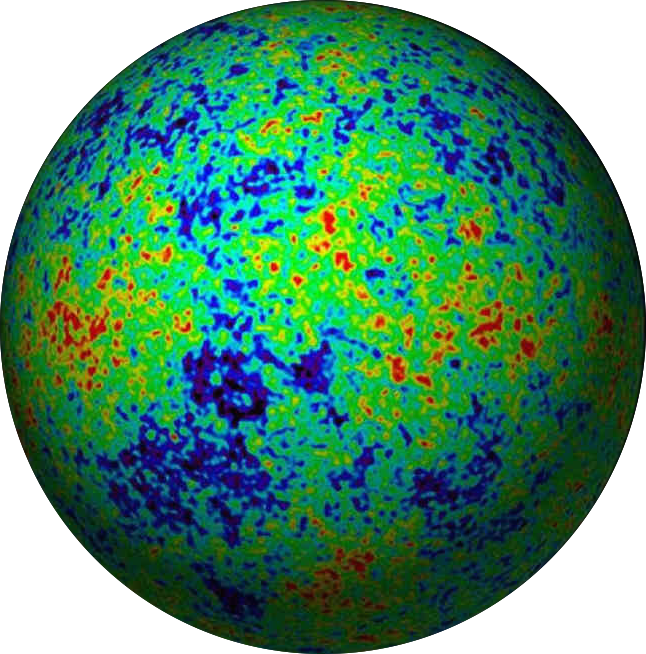

home
presentation
courses
codes
events
outreach
Outreach

Outreach videos
in a
TEDxCERN
meeting in 2014, I talked about
Taking the fingerprints of the universe
in this Euclid Hangout event on
Euclid and neutrinos
, Anais Rassat asked Licia Verde and me to explain why the Euclid satellite has the potential to measure neutrino masses
CERN journalists once asked me to talk about the
origin of the structures in the Universe
in 3 minutes
Outreach publications
viewpoint article on
Galaxies weigh in on neutrinos
in the magazine
Physics
I wrote (in French) the chapter on the standard comsological model in the book
Forme et Origine de l'Univers
,
Paris, Dunod, 2010
Still in French, my article on the
Invisible témoins du Big Bang
in the magazine
La Recherche
(access upon subscription)
Outreach organized by my research team at
TTK
our blog on
Tweeter
our on-line physics and cosmology chats on
periscope.tv
(managed by Deanna Hooper, PhD student)
A cup of Cosmology
, blog of my PhD student Deanna Hooper
Last update on the 10.01.2017. Back to
home
page.